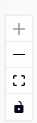
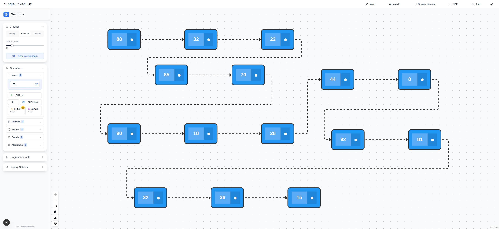

Operaciones
Creación
En el simulador las listas pueden ser creadas de diferentes maneras. Todas las opciones de creación se encuentran en el primer sub menú con el título List Creation.
Lista vacía
Para crear una lista vacía donde el usuario pueda comenzar a añadir elementos haciendo uso de las operaciones se debe hacer click en la pestaña Empty y a continuación hacer click en el botón Create Empty List (ver Figure 1). Al dar click en él aparecerá un mensaje en el lienzo de la derecha informando que la lista actualmente visualizada se encuentra vacía.
Lista con números aleatorios
La siguiente opción para crear una lista es con elementos aleatorios. Esto es especialmente útil cuando el usuario desea ver como se comporta una operación sobre una lista que ya contiene elementos y no desea insertarlos uno a uno. En esta opción es cuestión de seleccionar el número de nodos utilizando el elemento deslizante y posteriormente pulsar el botón Generate Random (ver Figure 2). Al presionar el botón aparecerá la lista en el lienzo de la derecha junto con sus elementos.
Lista personalizada
Cuando se requiere una lista con elementos específicos la tercera opción es la indicada. Haciendo click en Custom aparecerá un cuadro de texto para insertar cada uno de los elementos de la lista (ver Figure 2). El formato es simple: los elementos deben estar encerrados por los símbolos [y ]. Adicionalmente los números deben estar separado por comas. Por ejemplo, al introducir [1,2,3,4,5] se creará y visualizará la lista que contiene los elementos del \(1\) al \(5\).
Visualización de la lista
Después de creada la lista utilizando cualquiera de las formas mencionadas, está será visualizada en el lienzo que hay en la parte derecha. Por ejemplo, en la Figure 4 se muestra la interfaz con una lista creada de 7 elementos. En esta figura se encuentran las anotaciones de los diferentes nodos de la lista y los componentes de uno de ellos.
Existen diferentes formas de interactuar con la representación visual de la lista enlazada. Los nodos de la lista pueden ser reposicionados y su encadenamiento puede ser alterado. En la parte inferior izquierda del lienzo se encuentra una pequeña barra vertical con botones que tienen acción sobre la visualización del lienzo.

- El tercer botón de arriba a abajo permite siempre enfocar todos los elementos dentro del lienzo. Esto es de gran importancia porque facilita mucho la interacción con la visualización.
- El cuarto botón con el símbolo
 protege el lienzo de cualquier tipo de interacción. Esta opción es muy útil cuando se desean tomar imágenes de captura de pantalla o realizar explicaciones sin que se altere la visualización.
protege el lienzo de cualquier tipo de interacción. Esta opción es muy útil cuando se desean tomar imágenes de captura de pantalla o realizar explicaciones sin que se altere la visualización.
Cada nodo de la lista consta de dos partes como se identifican en la Figure 4. La primera contiene el dato y la segunda representa el apuntador al siguiente nodo en la lista. Cuando el mouse se posiciona sobre este último el apuntador es resaltado en un color diferente (ver Figure 5). Esto es útil cuando las listas no se muestran de manera lineal. A continuación se muestra la misma lista después de ser reorganizada arrastrando los nodos con el mouse sobre el lienzo. El puntero se posicionó sobre el nodo que contiene el valor \(44\).

Operaciones sobre la lista
Después de tener la lista creada o una lista vacía podemos comenzar a realizar operaciones sobre ella. Esto con el fin de observar el comportamiento de cada una de ellas. Las operaciones disponibles se pueden acceder desde el menú Operations (ver Figure 6).
Las operaciones se encuentran agrupadas según su lógica. Por ejemplo, el menú Insert agrupa las 4 operaciones que adicionan elementos en la lista. El menú Access contiene 3 operaciones que acceden a los elementos de la lista y así sucesivamente.
A continuación se describen en detalle cada una de las operaciones y su visualización.
Inserción de elementos
La aplicación provee visualización para 4 diferentes tipos de inserción a través del menú insert mostrado en la figura Figure 7. Para todos los casos, el valor a insertar debe ser definido en el primer cuadro de texto. En la figura este presenta el valor \(25\). También dentro del mismo cuadro de texto hay un botón que opcionalmente genera un valor aleatorio (ver Tip 2).


Pulsando este botón que se encuentra al lado del cuadro de texto se generará un valor aleatorio. Este valor será insertado por cualquiera de las operaciones.
At Head
Pulsando el botón At Head se inserta el nuevo elemento al inicio de la lista. El nuevo nodo se posicionará al inicio de la lista y tendrá un color diferente (ver Tip 3). La Figure 8 muestra el lienzo antes y después de la inserción.



En cualquier momento es posible cambiar el color de los nodos de la lista utilizando la funcionalidad del menú Display Options presentado a la izquierda. En este caso se seleccionan en el lienzo los nodos a los que se les desea cambiar el color. Posteriormente se selecciona el color que aparece al lado del botón Apply y se pulsa este último.
At Position
Para insertar un elemento en una posición específica se debe seleccionar la posición deseada en el cuadro de texto al lado del botón At Position. Posteriormente se debe pulsar el botón mencionado para insertar el elemento en la posición seleccionada. La ?@fig-insert_at_position_s2s muestra el lienzo antes y después de la inserción. En caso de ingresar una posición mayor a la cantidad de elementos de la lista, la entrada de texto se pondrá de color rojo indicando el error (ver Figure 9).

At Tail
Para insertar una elemento al final de la lista existen dos formas. En ambos casos los botones tienen el mismo nombre: __At Tail_. Uno de ellos tiene un símbolo de advertencia en la parte superior derecha y el otro no. Ambos insertan el elemento al final de la lista. La diferencia es que uno lo hace recorriendo la lista desde el primer elemento y el otro lo hace utilizando la referencia al último elemento de la lista. Cuando se usa la primera opción se verá la animación en el lienzo de como la lista es recorrida elemento a elemento.
Borrado de elementos
Para el borrado de elementos existen tres formas diferentes y se muestran en Figure 10. El botón con título Head permite borrar el primer elemento de la lista. De manera similar el botón con título Tail permite borrar el último elemento de la lista. Por último el botón con título Position permite borrar un elemento en una posición específica. En este caso primero se debe seleccionar la posición deseada en el cuadro de texto al lado del mismo.

Cuando se borra utilizando una posición no válida, el cuadro de texto se pondrá de color rojo indicando el error de manera similar al caso de la inserción.
Acceso a elementos
El siguiente grupo de operaciones es el de acceso. Las operaciones de acceso son tres:
- Front: el primer elemento de la lista.
- Back: el último elemento de la lista.
- Nth: el elemento en una posición específica.
Para cada una de las operaciones el elemento se identificará de manera gráfica en el lienzo.
La Figure 11 muestra las operaciones de acceso descritas anteriormente. En el caso de Nth es necesario insertar la posición en el cuadro de texto. Cuando se da click en el botón, se visualizará el recorrido hasta llegar a la posición deseada. Si se inserta una posición no válida, el cuadro de texto se pondrá de color rojo indicando el error de manera similar al caso de la inserción.
Búsqueda de elementos
La Figure 12 contiene la única operación de búsqueda en una lista enlazada. En el cuadro de texto se inserta el valor a buscar. Al pulsar el botón se visualizará de manera animada el recorrido de la lista hasta llegar al valor buscado. Si el valor no se encuentra en la lista, el cuadro de texto se pondrá de color rojo indicando que el elemento no fue encontrado. Si el valor es encontrado entonces el nodo que lo contiene se pondrá de color verde y en el botón aparecerá la posición.

Herramientas de programador
Una característica importante que tiene este módulo de visualización es la separación de conceptos. Por ejemplo, una lista, conceptualmente, es una secuencia de elementos. A nivel de programación surgen algunos conceptos que son importantes a la hora de implementar esta secuencia. Por ejemplo, se hace necesario hablar de punteros y direcciones de memoria. Por esta razón el simulador incluye un conjunto de herramientas en el menú Programmer Tools que se muestra en la Figure 13.
Apuntadores al primer y último nodo
El botón Show head and tail pointers hará visibles los punteros al primer y último elemento en la lista. Hasta ahora las listas que se han mostrado como la de la ?@fig-operations-remove-commented no tienen esta opción activada. Es posible apreciar la diferencia con la lista que se muestra en la Figure 14. Los nodos naranja representan cada uno de los punteros. Si el usuario localiza el puntero del mouse sobre alguno de ellos la conexión se resaltará.

Apuntadores adicionales
Durante el diseño de una operación sobre listas es siempre importante considerar el movimiento de los punteros. Incluso operaciones como remover un elemento en una posición de la lista usan punteros adicionales. Para este tipo de operaciones la aplicación cuenta con la funcionalidad de crear nodos de tipo apuntador. Esto se logra haciendo click en el botón Add pointer (ver Figure 13). Cuando se pulsa este botón se adiciona un nuevo nodo circular al lienzo y este se puede conectar a cualquiera de los nodos de la lista.

La Figure 15 muestra una lista que incluye los punteros a la cabeza y a la cola. Adicionalmente también hay dos punteros llamados \(P\) y \(Q\) que apuntan al segundo y al cuarto elemento.
Los punteros pueden ser reposicionados utilizando el mouse y arrastrando la conexión a otro nodo. Haciendo doble click sobre el nodo es posible cambiar el nombre del puntero. Esto es muy útil en labores de enseñanza.
Otras operaciones
La aplicación cuenta con algunas funcionalidades que no son propias de las estructuras de datos pero si lo son de la enseñanza y el aprendizaje. Por ejemplo, en el Tip 1 se observa la barra de herramientas que tiene el lienzo en su parte inferior izquierda.
- El botón
 exporta el lienzo en su estado actual a un archivo de imagen con extensión png.
exporta el lienzo en su estado actual a un archivo de imagen con extensión png. - El botón
 activa la opción de puntero, la cual actúa como un señalador y ayuda a la comunicación efectiva de las ideas. El puntero del mouse va a estar acompañado de un punto rojo de color atractivo. Para desactivarla se debe dar click de nuevo en el mismo botón.
activa la opción de puntero, la cual actúa como un señalador y ayuda a la comunicación efectiva de las ideas. El puntero del mouse va a estar acompañado de un punto rojo de color atractivo. Para desactivarla se debe dar click de nuevo en el mismo botón.